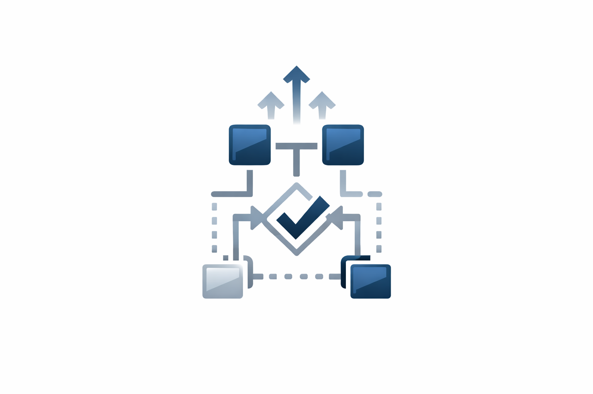

01
Cyber Security Transformation
CAF, IAM, SIEM, resilience and enterprise security controls.
Tim Williams Consulting Ltd delivers senior programme leadership across cyber security, cloud transformation, digital workplace and enterprise infrastructure. With deep experience guiding complex, high‑risk initiatives, TWC ensures clarity, governance and delivery confidence from day one.
As a specialist consultancy focused on programme leadership, Tim Williams Consulting Ltd brings structure, pace and clarity to complex transformation. Our approach blends governance discipline with hands‑on delivery experience across cyber security, cloud and enterprise infrastructure.
Tim Williams Consulting Ltd is the registered business name for Tim Williams Consulting Ltd, a specialist consultancy focused on complex technology transformation.
The consultancy provides senior programme leadership, PMO governance and delivery assurance across demanding technology environments.
The brand provides a clear, professional identity for consulting engagements delivered by Tim Williams, combining senior experience with a structured, outcome-driven approach.
The focus is straightforward: create clarity, establish control and turn complex transformation into measurable delivery.
Practical leadership across the technology environments where governance, delivery and technical complexity intersect.
CAF, IAM, SIEM, resilience and enterprise security controls.
Azure, AWS, Entra ID and Intune transformation programmes.
Windows, Teams and large-scale global device estates.
Enterprise infrastructure, resilience, operations and modernisation.
PMO, assurance, governance, delivery control and executive reporting.
Readiness, handover and operational adoption.
Complex technology programmes require more than technical expertise. They need clear leadership, effective governance and disciplined execution. Explore selected examples of enterprise transformation, cyber security and programme management experience.
Cyber security programme leadership focused on strengthening security governance, improving control maturity and coordinating delivery across complex technology and stakeholder environments.
Large-scale digital workplace delivery involving endpoint migration, deployment coordination and programme control across a geographically distributed enterprise environment.
Enterprise workplace delivery across a complex international estate, requiring structured planning, stakeholder coordination, deployment governance and control across multiple locations.
PMO leadership and governance supporting a complex nuclear-sector IT portfolio, with emphasis on portfolio oversight, reporting, delivery controls, risk management and assurance.
Enterprise endpoint modernisation involving migration planning, deployment coordination, stakeholder management and delivery governance across a large user estate.
Technology programme delivery in a demanding professional-services environment, requiring structured coordination, stakeholder engagement, deployment planning and operational readiness.
It fails when leadership, governance and delivery lose alignment.
Tim Williams Consulting Ltd exists to provide experienced programme leadership where complexity, risk and organisational change require someone who can bring structure, challenge assumptions and maintain delivery momentum.

Tim Williams Consulting Ltd is led by Tim Williams, an experienced senior IT programme manager delivering complex cyber security, cloud, infrastructure and enterprise transformation programmes.
His approach combines programme leadership, governance discipline and practical technical understanding to maintain control across complex delivery environments.
Experience across NHS, Defence and global enterprise environments.
Direct engagement with the person accountable for delivery.
Programme leadership grounded in practical technology understanding.
A consistent focus on measurable improvement rather than activity.
Whether you're mobilising a transformation, recovering a programme at risk or strengthening delivery governance, let's discuss what you need.